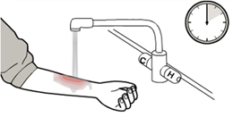
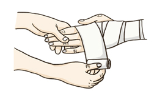
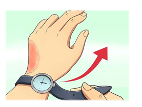

화상응급처치
화상응급처치를 사전에 충분히 습득해서 상황이 발생하였을 때 빠른 처치를 할 수 있도록 대비하시기 바랍니다.
1도 화상
피부가 빨갛게 되면서 부어오르나 물집은 생기지 않는다. 약한 통증이 있다.


- 차가운 흐르는 물 아래에서 최소 10분 가량 피부를 식혀 주세요.
- 통증과 피부손상을 줄여줍니다.
- 추가적인 치료가 필요하다면 깨끗한 천, 또는 붕대로 상처를 느슨하게 감아 병원으로 이동합니다.
2도 화상
피부가 빨갛게 되고 타는 듯한 통증이 있다. 상처가 붓고 물집이 생긴다.
- 수포를 터드리는 등 피부에 자극을 주지 않고 찬물에 15분정도 상처를 식혀줍니다.
- 통증과 피부손상을 줄여줍니다.
- 추가적인 치료가 필요하다면 깨끗한 천, 또는 붕대로 상처를 느슨하게 감아 병원으로 이동합니다.
3도 화상
피부 전층이 손상을 입어 피부가 건조하고 흰색 또는 검은색으로 변한다. 피부 속 깊은 곳까지 화상을 입은 상태이다.

- 어떠한 자극도 하지마시고 119에 신고하세요.
- 통증과 피부손상을 줄여줍니다.
- 이미 피부조직에 눌러 붙은 이물질은 무리하여 제거하지 마세요.
- 피부조직에 붙지 않은 옷 또는 손목시계, 액세서리 등의 이물질을 제거하세요.
 [도전 안전벨] 화상
[도전 안전벨] 화상 소화기사용법
소화기사용법
 심폐소생술
심폐소생술
 화상응급처치
화상응급처치
 출혈응급처치
출혈응급처치
 벌쏘임 예방
벌쏘임 예방